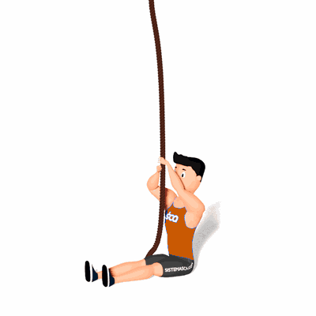

L-Sit Rope Climb

Esse exercício desenvolve a força, coordenação e trabalho do grip.
Ficha Técnica
Tipo: CrossFit
Grupo Muscular: Corpo
Aparelho: Nenhum
Músculos: Nenhum
Como realizar
- Sentado no chão e com as pernas estendidas;
- Um dos braços ficará estendido acima da cabeça, enquanto o outro segura;
- O braço fará força para puxar o mais alto possível, enquanto o braço inferior eleva a corda, repetindo a tração;
- Mantenha as pernas estendidas na horizontal;
- Continuar alternando e puxando os braços de forma ascendente.
 RC STORE
RC STORE